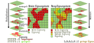
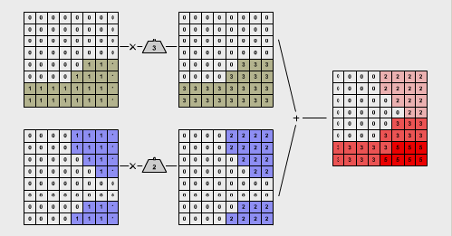

Boolesche Verschneidung
Die Eignungskarte stellt räumliche Bereiche dar, die auf der Eignung bestimmter Kriterien in Bezug auf die Fragestellung basieren. Sie werden als gut (1) oder schlecht (0) eingestuft. Jedes Kriterium wird einzeln in Form einer binären Präferenzkarte dargestellt. Diese Karten werden dann durch eine Multiplikationsoperation kombiniert, bei der der Wert jeder Zelle durch Multiplikation der Werte der räumlich korrespondierenden Zellen in den einzelnen Karten bestimmt wird. So wird z. B. die Kombination 0 x 0 x 0 x 0 x 0 in der Zielkarte ebenso wie die Kombination 1 x 1 x 1 x 1 x 0 dem Wert Null zugeordnet. In der resultierenden Karte werden die Gebiete hervorgehoben, die alle Kriterien gleichzeitig erfüllen. Durch Aufsummierung dieser Werte kann eine Rangskala - Eignungskarte erstellt werden, die den Grad der Eignung auf Basis der kumulierten Werte aus der Kombination der Kriterien angibt und somit eine differenzierte Bewertung der räumlichen Eignung ermöglicht.

Angenommen, die in den Marburger Uniwald eingewanderte Wildkatze besiedelt nur Laubwälder und nur steile Bereiche > 20 Grad Hangneigung, so reicht eine logische Operation aus, um geeignete Lebensräume für die Katze zu ermitteln. Jedes dieser beiden Kriterien kann mit einer binären Informationsebene (Wald/Nichtwald und Steil/Nicht-Steil) kodiert werden. Potenzielle Habitate sind nun genau die Gebiete, für die beide Kriterien zutreffen. Mit anderen Worten: Flächen, die wahr für Wald und für Hangneigung > 20 Grad sind. Natürlich lässt sich das Beipiel einer Ranglistenkarte ebenfalls auf dieser Grundlage erzeugen. Dur eine Addition der kodierten Datensätze bekommen wir 0 ungeeignet, 1 teilweise geeignet und 2 geeignet.
Die Boolesche Verschneidung eignet sich vor allem für Eignungsanalysen mit randscharfen und klar ausschließenden Kriterien. Können z.B. Siedlungsgebiete und industrielle landwirtschaftliche Nutzflächen bereits zu Beginn der Analyse als Katzenlebensraum ausgeschlossen werden, ist das potenzielle Eignungsgebiet mit einer einfachen Booleschen Verschneidung schnell ermittelt.
Die gewichtete Schnittmenge
Für viele Fragestellungen stellt die Einteilung der Realität in die binären Kategorien wahr oder falsch eine unzureichende Abbildung der Realität dar. Die gleichgewichtete Ausschlusswirkung von Einflussfaktoren spiegelt in der Regel nicht die tatsächliche Gewichtung von Entscheidungen wider.
So können für den Käufer eines neuen Mobiltelefons Marke und Funktion wichtiger sein als Displaygröße, Preis oder Robustheit. Dieses allgemeine Prinzip der Gewichtung von Einflussfaktoren wird auch bei der Eignungsanalyse mit GIS angewendet. Der entsprechende Ansatz wird als gewichtete Verschneidung bezeichnet.
In vielen räumlichen Analysen sind bestimmte Kriterien in Bezug auf das Ziel n-mal wichtiger als andere. Oft ist es gerade eine Anforderung an die Standortsuche, mehrere geeignete Standorte dahingehend zu vergleichen, ob und wie stark sie eine Reihe unterschiedlich wichtiger Kriterien erfüllen. Durch das Ebenenprinzip der GI-Systeme kann die Verschneidung sehr einfach um die Idee unterschiedlich wichtiger Kriterien erweitert werden. Jeder thematischen Ebene wird ein numerischer Gewichtungsfaktor zugeordnet, der ihrer relativen Bedeutung gegenüber den anderen Ebenen entspricht. Die so gewichteten Informationsebenen werden dann wie bisher verschnitten. Wie das Boole’sche Verschneiden ist auch das gewichtete Verschneiden prinzipiell sowohl im Raster- als auch im Vektormodell möglich. So könnten z.B. Tourismusexperten einer Urlaubsinsel die negativen Auswirkungen von Hotels und Bars für ein alternatives Tourismuskonzept mit dem Faktor 0,1 gewichten und Quad-Trek-Routen durch das Binnenland mit dem Faktor 1. In der Regel sollten die Wertebereiche der Eingangsinformationsebenen normiert (d.h. zwischen z.B. 0 und 1 skaliert) werden. In der resultierenden Eignungsstufe sind die geeigneten Räume bzw. Standorte durch besonders hohe Werte erkennbar.
Katzen im Lahntal
Betrachten Sie das folgende Beispiel. Hier wird die gewichtete Verschneidung am Beispiel des Wildkatzenhabitats im Marburger Uniwald eingeführt. Um eine realistischere Modellierung geeigneter Lebensräume zu ermöglichen, werden im folgenden Beispiel nicht mehr ausschließlich binäre Eingangsdaten wie die Boolesche Verschneidung verwendet, sondern sogenannte Ratiodaten. Es werden KAtegorien oder Klassen von Eignung erstellt und gleichläufig skaliert.
- Vegetationsdichte statt “Wald/Nichtwald
- Hangneigung statt “steil/nicht steil
- Nähe zu Siedlungen statt “besiedelt/nicht besiedelt
- Exposition in Grad
- Als Einschränkung versiegelte Flächen
Ablauf einer gewichteten Eignungsschätzung
Betrachten wir die Schritte im Einzeln:
- Kriterienauswahl: Der erste Schritt besteht in der Auswahl der Kriterien, die den gesuchten Raum im Hinblick auf die Wildkatze als geeignete Prädiktoren charakterisieren (blaue und orange unterlegte Kästen).
- Standardisierung: Nun müssen die unterschiedlichen Maßstäbe der Eingangsdatensätze aufeinander abgestimmt werden. Es macht wenig Sinn, eine prozentuale Hangneigung direkt mit einer Bevölkerungsdichte zu verrechnen. Deshalb werden den Eingangsdaten völlig unterschiedliche Einheiten einer standardisierten numerischen Indexskala (z.B. 0-1, 0-100, 0-255) zugeordnet/kategorisiert. Daraus folgt, dass die Werte der resultierenden Eignungsstufen keine Einheiten mehr tragen, sondern nur noch einen numerischen Eignungsindex. Die Zuordnung der Eingangswerte zur Indexskala kann auf verschiedene Weise erfolgen, wobei eine lineare Zuordnung die einfachste ist.
- Jeder kategorisierte Datensatz erhält einen Multiplikator bzw. ein Gewicht. Die Gewichte spiegeln die relative Bedeutung der Informationsebenen zueinander wider. Die wichtigste Ebene erhält das höchste Gewicht. Gibt es kein Wissen über Präferenzen werde die Datensätze gleich gewichtet. Wichtig ist das die Summer der Gewichte 1 ergibt.
- Ablauf: Jede Informationsebene wird mit ihrem Gewicht multipliziert und die Ebenen anschließend addiert. In der resultierenden Eignungsstufe haben die besser geeigneten Rasterzellen hohe Werte und die ungeeigneten Rasterzellen niedrige Werte.

In dieser Darstellung wurden exemplarisch die beiden Eignungskriterien für den Katzenlebensraum im Lahntal entsprechend ihrer relativen Bedeutung gewichtet. Die Informationsebene „bewaldet“ wird mit dem Faktor 3 gewichtet, die des Kriteriums „steiles Gelände“ mit dem Faktor 2. Nach der Gewichtung werden die beiden Ebenen addiert. Der Eignungswert der resultierenden Informationsebene reicht von 0 (nicht geeignet) bis 5 (sehr geeignet).
Bestimmung der Gewichte
Im Entscheidungsprozess werden, wie bereits erwähnt, die einzelnen Kriterien von verschiedenen Interessengruppen unterschiedlich bewertet und gewichtet. Wie können solche Bewertungen vergleichbar gemacht werden? Genau die gleiche Frage stellt sich bei der Suche nach einem Lebensraum für den Wolf in St. Gallen. Angenommen, die Expertinnen und Experten haben sich darauf geeinigt, eine gewichtete Schnittmenge für ihre Eignungsanalyse zu verwenden. Wie gewichten sie dann die einzelnen Kriterien? Wie kommen die Experten und Expertinnen z.B. darauf, dass das Kriterium „Rückzugsraum Wald“ 1,5 mal so wichtig ist wie „steiles und felsiges Gelände“? Die Verteilung der Gewichte ist bei einer Eignungsanalyse mit gewichteter Verschneidung ebenso wichtig wie schwierig.
Der einfachste Weg, eine Gewichtung vorzunehmen, besteht darin, die Kriterien in eine Rangfolge zu bringen. Dabei kann aufsteigend oder absteigend gereiht werden. Aufsteigend bedeutet, dass das wichtigste Kriterium den Rang 1 erhält, das zweitwichtigste den Rang 2 usw. Bei einer absteigenden Rangfolge erhält das unwichtigste Kriterium den Rang 1, das zweitwichtigste den Rang 2 usw. Sobald die Ränge verteilt sind, können die numerischen Gewichte, die den Rängen entsprechen, auf verschiedene Weise abgeleitet werden. Im obigen Beiepiel wurde absteigend gewicht.